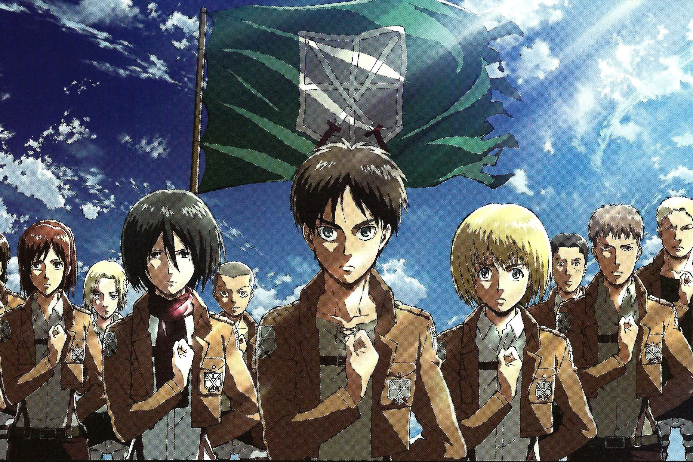
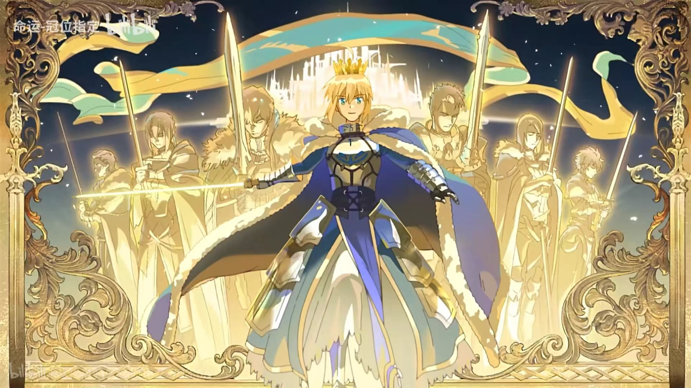

进击的巨人
最近更新
介绍

神圣圆桌邻域卡美洛 ——上篇
当初的朝圣之地已经化为遍地黄沙的不毛之地，民众被赶出家园，三大势力相持不下。
一个是在圣城，遵从狮子王的命令而集结的“圆桌骑士”。
一个是被连同整片领地召唤而来，养精蓄锐，准备打破僵局的“太阳王奥斯曼狄斯”。
一个是守护被夺走土地的民众，等待反叛时机的“山中之民”。
就在贝德维尔为了达成自己的使命，前往狮子王统治的“圣都”之时，遇到了为修复人理而来到此地的最后一位御主藤丸立香，以及拟似从者玛修·基列莱特。